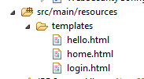
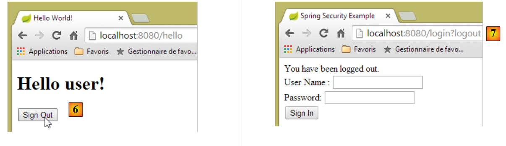

19. Securing Access to a Web Service with Spring Security
19.1. The role of Spring Security in a web application
Let’s situate Spring Security within the development of a web application. Most often, it will be built on a multi-tier architecture such as the following:
 |
- the [Spring Security] layer grants access to the [web] layer only to authorized users.
19.2. A tutorial on Spring Security
We will once again import a Spring guide by following steps 1 through 3 below:
 |
 |
The project consists of the following elements:
- in the [templates] folder, you’ll find the project’s HTML pages;
- [Application]: is the project’s executable class;
- [MvcConfig]: is the Spring MVC configuration class;
- [WebSecurityConfig]: is the Spring Security configuration class; ### 19.2.1. Maven Configuration
Project [3] is a Maven project. Let's take a look at its [pom.xml] file to see its dependencies:
<?xml version="1.0" encoding="UTF-8"?>
<project xmlns="http://maven.apache.org/POM/4.0.0" xmlns:xsi="http://www.w3.org/2001/XMLSchema-instance"
xsi:schemaLocation="http://maven.apache.org/POM/4.0.0 http://maven.apache.org/xsd/maven-4.0.0.xsd">
<modelVersion>4.0.0</modelVersion>
<groupId>org.springframework</groupId>
<artifactId>gs-securing-web</artifactId>
<version>0.1.0</version>
<parent>
<groupId>org.springframework.boot</groupId>
<artifactId>spring-boot-starter-parent</artifactId>
<version>1.2.3.RELEASE</version>
</parent>
<dependencies>
<dependency>
<groupId>org.springframework.boot</groupId>
<artifactId>spring-boot-starter-thymeleaf</artifactId>
</dependency>
<!-- tag::security[] -->
<dependency>
<groupId>org.springframework.boot</groupId>
<artifactId>spring-boot-starter-security</artifactId>
</dependency>
<!-- end::security[] -->
</dependencies>
<properties>
<start-class>hello.Application</start-class>
</properties>
<build>
<plugins>
<plugin>
<groupId>org.springframework.boot</groupId>
<artifactId>spring-boot-maven-plugin</artifactId>
</plugin>
</plugins>
</build>
</project>
- lines 10–14: the project is a Spring Boot project;
- lines 17–20: dependency on the [Thymeleaf] framework;
- lines 22–25: dependency on the Spring Security framework; ### 19.2.2. Thymeleaf views
 |
The [home.html] view is as follows:
 |
<!DOCTYPE html>
<html xmlns="http://www.w3.org/1999/xhtml"
xmlns:th="http://www.thymeleaf.org"
xmlns:sec="http://www.thymeleaf.org/thymeleaf-extras-springsecurity3">
<head>
<title>Spring Security Example</title>
</head>
<body>
<h1>Welcome!</h1>
<p>
Click <a th:href="@{/hello}">here</a> to see a greeting.
</p>
</body>
</html>
- line 12: the attribute [th:href="@{/hello}"] will generate the [href] attribute of the <a> tag. The value [@{/hello}] will generate the path [<context>/hello], where [context] is the context of the web application;
The generated HTML code is as follows:
<!DOCTYPE html>
<html xmlns="http://www.w3.org/1999/xhtml" xmlns:sec="http://www.thymeleaf.org/thymeleaf-extras-springsecurity3">
<head>
<title>Spring Security Example</title>
</head>
<body>
<h1>Welcome!</h1>
<p>
Click
<a href="/hello">here</a>
to see a greeting.
</p>
</body>
</html>
The [hello.html] view is as follows:
 |
<!DOCTYPE html>
<html xmlns="http://www.w3.org/1999/xhtml"
xmlns:th="http://www.thymeleaf.org"
xmlns:sec="http://www.thymeleaf.org/thymeleaf-extras-springsecurity3">
<head>
<title>Hello World!</title>
</head>
<body>
<h1 th:inline="text">Hello [[${#httpServletRequest.remoteUser}]]!</h1>
<form th:action="@{/logout}" method="post">
<input type="submit" value="Sign Out" />
</form>
</body>
</html>
- line 9: The [th:inline="text"] attribute will generate the text of the <h1> tag. This text contains a $ expression that must be evaluated. The element [[${#httpServletRequest.remoteUser}]] is the value of the [RemoteUser] attribute of the current HTTP request. This is the name of the logged-in user;
- line 10: an HTML form. The [th:action="@{/logout}"] attribute will generate the [action] attribute of the [form] tag. The value [@{/logout}] will generate the path [<context>/logout], where [context] is the web application context;
The generated HTML code is as follows:
<!DOCTYPE html>
<html xmlns="http://www.w3.org/1999/xhtml" xmlns:sec="http://www.thymeleaf.org/thymeleaf-extras-springsecurity3">
<head>
<title>Hello World!</title>
</head>
<body>
<h1>Hello user!</h1>
<form method="post" action="/logout">
<input type="submit" value="Sign Out" />
<input type="hidden" name="_csrf" value="b152e5b9-d1a4-4492-b89d-b733fe521c91" />
</form>
</body>
</html>
- line 8: the translation of "Hello [[${#httpServletRequest.remoteUser}]]!";
- line 9: the translation of @{/logout};
- line 11: a hidden field named (name attribute) _csrf;
The final view [login.html] is as follows:
 |
<!DOCTYPE html>
<html xmlns="http://www.w3.org/1999/xhtml"
xmlns:th="http://www.thymeleaf.org"
xmlns:sec="http://www.thymeleaf.org/thymeleaf-extras-springsecurity3">
<head>
<title>Spring Security Example</title>
</head>
<body>
<div th:if="${param.error}">Invalid username and password.</div>
<div th:if="${param.logout}">You have been logged out.</div>
<form th:action="@{/login}" method="post">
<div>
<label> User Name : <input type="text" name="username" />
</label>
</div>
<div>
<label> Password: <input type="password" name="password" />
</label>
</div>
<div>
<input type="submit" value="Sign In" />
</div>
</form>
</body>
</html>
- line 9: the attribute [th:if="${param.error}"] ensures that the <div> tag will only be generated if the URL displaying the login page contains the [error] parameter (http://context/login?error);
- line 10: the attribute [th:if="${param.logout}"] ensures that the <div> tag will only be generated if the URL displaying the login page contains the [logout] parameter (http://context/login?logout);
- lines 11–23: an HTML form;
- line 11: the form will be submitted to the URL [<context>/login], where <context> is the web application context;
- line 13: an input field named [username];
- line 17: an input field named [password];
The generated HTML code is as follows:
<!DOCTYPE html>
<html xmlns="http://www.w3.org/1999/xhtml" xmlns:sec="http://www.thymeleaf.org/thymeleaf-extras-springsecurity3">
<head>
<title>Spring Security Example </title>
</head>
<body>
<div>
You have been logged out.
</div>
<form method="post" action="/login">
<div>
<label>
Username:
<input type="text" name="username" />
</label>
</div>
<div>
<label>
Password:
<input type="password" name="password" />
</label>
</div>
<div>
<input type="submit" value="Sign In" />
</div>
<input type="hidden" name="_csrf" value="ef809b0a-88b4-4db9-bc53-342216b77632" />
</form>
</body>
</html>
Note on line 28 that Thymeleaf has added a hidden field named [_csrf].
19.2.3. Spring MVC Configuration
 |
The [MvcConfig] class configures the Spring MVC framework:
package hello;
import org.springframework.context.annotation.Configuration;
import org.springframework.web.servlet.config.annotation.ViewControllerRegistry;
import org.springframework.web.servlet.config.annotation.WebMvcConfigurerAdapter;
@Configuration
public class MvcConfig extends WebMvcConfigurerAdapter {
@Override
public void addViewControllers(ViewControllerRegistry registry) {
registry.addViewController("/home").setViewName("home");
registry.addViewController("/").setViewName("home");
registry.addViewController("/hello").setViewName("hello");
registry.addViewController("/login").setViewName("login");
}
}
- line 7: the [@Configuration] annotation makes the [MvcConfig] class a configuration class;
- line 8: the [MvcConfig] class extends the [WebMvcConfigurerAdapter] class to override certain methods;
- line 10: redefinition of a method from the parent class;
- lines 11–16: the [addViewControllers] method allows URLs to be associated with HTML views. The following associations are made there:
| view |
| /templates/home.html |
| /templates/hello.html |
| /templates/login.html |
The [html] suffix and the [templates] folder are the default values used by Thymeleaf. They can be changed via configuration. The [templates] folder must be at the root of the project's classpath:
 |
In [1] above, the [java] and [resources] folders are both source folders. This means their contents will be at the root of the project’s classpath. Therefore, in [2], the [hello] and [templates] folders will be at the root of the classpath.
19.2.4. Spring Security Configuration
 |
The [WebSecurityConfig] class configures the Spring Security framework:
package hello;
import org.springframework.context.annotation.Configuration;
import org.springframework.security.config.annotation.authentication.builders.AuthenticationManagerBuilder;
import org.springframework.security.config.annotation.web.builders.HttpSecurity;
import org.springframework.security.config.annotation.web.configuration.WebSecurityConfigurerAdapter;
import org.springframework.security.config.annotation.web.servlet.configuration.EnableWebMvcSecurity;
@Configuration
@EnableWebMvcSecurity
public class WebSecurityConfig extends WebSecurityConfigurerAdapter {
@Override
protected void configure(HttpSecurity http) throws Exception {
http.authorizeRequests().antMatchers("/", "/home").permitAll().anyRequest().authenticated();
http.formLogin().loginPage("/login").permitAll().and().logout().permitAll();
}
@Override
protected void configure(AuthenticationManagerBuilder auth) throws Exception {
auth.inMemoryAuthentication().withUser("user").password("password").roles("USER");
}
}
- line 9: the [@Configuration] annotation makes the [WebSecurityConfig] class a configuration class;
- line 10: the [@EnableWebSecurity] annotation makes the [WebSecurityConfig] class a Spring Security configuration class;
- Line 11: The [WebSecurity] class extends the [WebSecurityConfigurerAdapter] class to override certain methods;
- Line 12: Redefinition of a method from the parent class;
- lines 13–16: The [configure(HttpSecurity http)] method is overridden to define access rights for the application’s various URLs;
- line 14: the [http.authorizeRequests()] method allows URLs to be associated with access rights. The following associations are made there:
| rule | code |
| access without authentication | |
| authenticated access only | |
- line 15: defines the authentication method. Authentication is performed via a URL form [/login] accessible to everyone [http.formLogin().loginPage("/login").permitAll()]. Logout is also accessible to everyone;
- lines 19–21: redefine the method [configure(AuthenticationManagerBuilder auth)] that manages users;
- line 20: authentication is performed using hard-coded users [auth.inMemoryAuthentication()]. A user is defined here with the login [user], password [password], and role [USER]. Users with the same role can be granted the same permissions; ### 19.2.5. Executable class
 |
The [Application] class is as follows:
package hello;
import org.springframework.boot.autoconfigure.EnableAutoConfiguration;
import org.springframework.boot.SpringApplication;
import org.springframework.context.annotation.ComponentScan;
import org.springframework.context.annotation.Configuration;
@EnableAutoConfiguration
@Configuration
@ComponentScan
public class Application {
public static void main(String[] args) throws Throwable {
SpringApplication.run(Application.class, args);
}
}
- line 8: the [@EnableAutoConfiguration] annotation instructs Spring Boot (line 3) to perform the configuration that the developer has not explicitly set up;
- line 9: makes the [Application] class a Spring configuration class;
- line 10: instructs the system to scan the directory containing the [Application] class to search for Spring components. The two classes [MvcConfig] and [WebSecurityConfig] will thus be discovered because they have the [@Configuration] annotation;
- line 13: the [main] method of the executable class;
- line 14: the static method [SpringApplication.run] is executed with the [Application] configuration class as a parameter. We have already encountered this process and know that the Tomcat server embedded in the project’s Maven dependencies will be launched and the project deployed on it. We saw that four URLs were handled [/, /home, /login, /hello] and that some were protected by access rights. ### 19.2.6. Testing the Application
Let’s start by requesting the URL [/], which is one of the four accepted URLs. It is associated with the view [/templates/home.html]:
 |
The requested URL [/] is accessible to everyone. That is why we were able to retrieve it. The link [here] is as follows:
Click <a href="/hello">here</a> to see a greeting.
The URL [/hello] will be requested when we click on the link. This one is protected:
| rule | code |
| access without authentication | |
| authenticated access only | |
You must be authenticated to access it. Spring Security will then redirect the client browser to the authentication page. Based on the configuration shown, this is the page at the URL [/login]. This page is accessible to everyone:
http.formLogin().loginPage("/login").permitAll().and().logout().permitAll();
So we get it [1]:
 |
The source code of the page obtained is as follows:
<!DOCTYPE html>
<html xmlns="http://www.w3.org/1999/xhtml" xmlns:sec="http://www.thymeleaf.org/thymeleaf-extras-springsecurity3">
...
<form method="post" action="/login">
...
<input type="hidden" name="_csrf" value="87bea06a-a177-459d-b279-c6068a7ad3eb" />
</form>
</body>
</html>
- On line 7, a hidden field appears that is not present in the original [login.html] page. Thymeleaf added it. This code, known as CSRF (Cross-Site Request Forgery), is designed to address a security vulnerability. This token must be sent back to Spring Security along with the authentication credentials for the authentication to be accepted;
We recall that only the user/password pair is recognized by Spring Security. If we enter something else in [2], we get the same page with an error message in [3]. Spring Security has redirected the browser to the URL [http://localhost:8080/login?error]. The presence of the [error] parameter triggered the display of the tag:
<div th:if="${param.error}">Invalid username and password.</div>
Now, let’s enter the expected user/password values [4]:
 |
- in [4], we log in;
- in [5], Spring Security redirects us to the URL [/hello] because that is the URL we requested when we were redirected to the login page. The user’s identity was displayed by the following line of [hello.html]:
<h1 th:inline="text">Hello [[${#httpServletRequest.remoteUser}]]!</h1>
Page [5] displays the following form:
<form th:action="@{/logout}" method="post">
<input type="submit" value="Sign Out" />
</form>
When you click the [Sign Out] button, a POST request is sent to the URL [/logout]. Like the URL [/login], this URL is accessible to everyone:
http.formLogin().loginPage("/login").permitAll().and().logout().permitAll();
In our URL/view mapping, we haven’t defined anything for the URL [/logout]. What will happen? Let’s try it:
 |
- In [6], we click the [Sign Out] button;
- in [7], we see that we have been redirected to the URL [http://localhost:8080/login?logout]. Spring Security requested this redirection. The presence of the [logout] parameter in the URL caused the following line to be displayed in the view:
<div th:if="${param.logout}">You have been logged out.</div>
19.2.7. Conclusion
In the previous example, we could have written the web application first and then secured it. Spring Security is non-intrusive. You can implement security for a web application that has already been written. Furthermore, we discovered the following points:
- it is possible to define an authentication page;
- authentication must be accompanied by the CSRF token issued by Spring Security;
- if authentication fails, you are redirected to the authentication page with an additional error parameter in the URL;
- if authentication succeeds, you are redirected to the page requested at the time of authentication. If you request the authentication page directly without going through an intermediate page, Spring Security redirects you to the URL [/] (this case was not demonstrated);
- You log out by requesting the URL [/logout] with a POST request. Spring Security then redirects you to the authentication page with the "logout" parameter in the URL;
All these conclusions are based on Spring Security’s default behavior. This behavior can be changed through configuration by overriding certain methods of the [WebSecurityConfigurerAdapter] class.
The previous tutorial will be of little help to us going forward. We will, in fact, use:
- a database to store users, their passwords, and their roles;
- HTTP header-based authentication;
There are very few tutorials available for what we want to do here. The solution we’ll propose is a combination of code snippets found here and there.